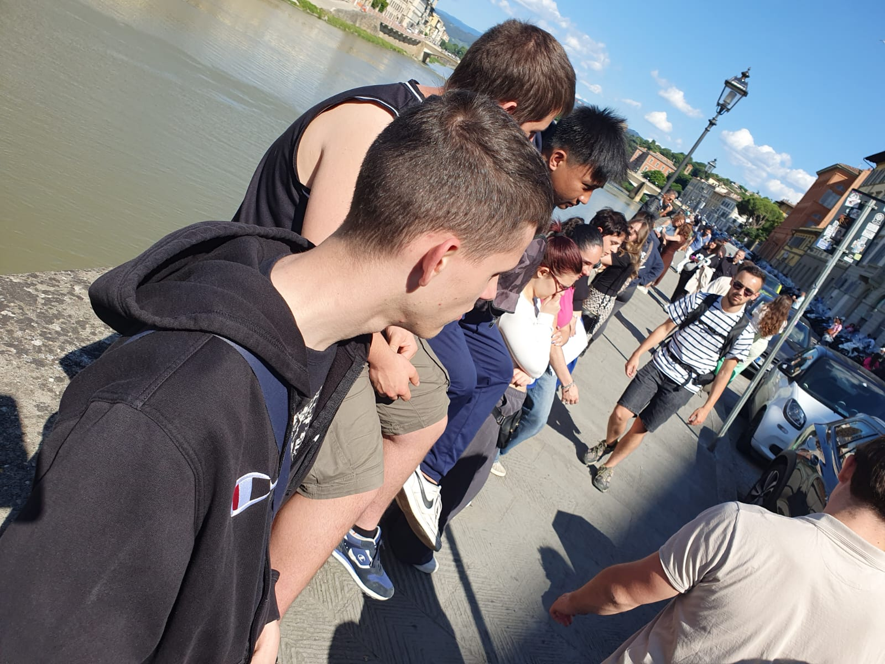
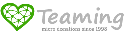
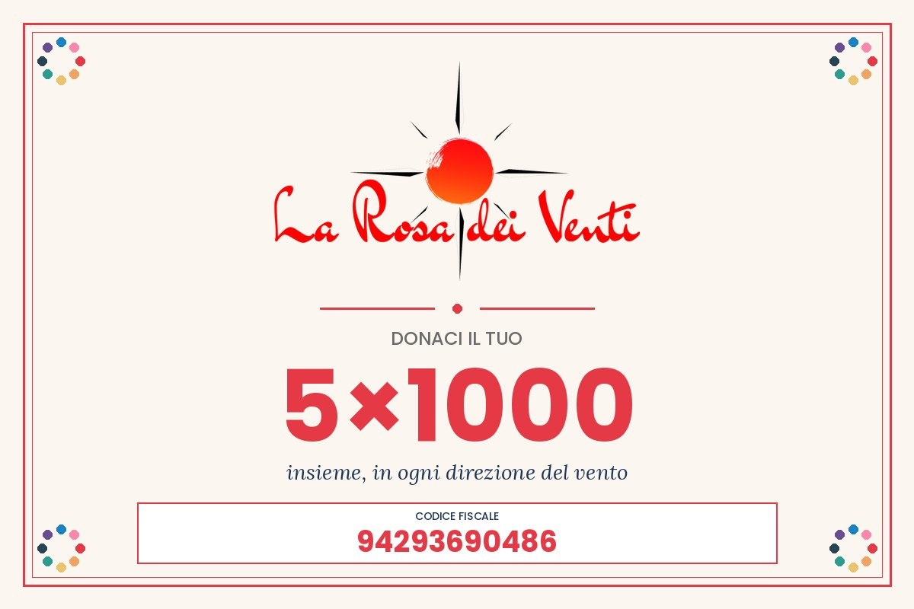

Sostienici
A settembre non voleva entrare. A maggio ha preso il treno da solo.
Non chiediamo un contributo generico: ogni cifra qui sotto è una cosa precisa che succede a un ragazzo. In tutto sono stati …, in …, per … insieme.
Sei modi per starci vicino
Non servono tutti dei soldi. Scegli il tuo e ti porto lì.
Che cosa diventa
Quattro gradini, e nessuno li sale nello stesso tempo. Ma li sale.
Un mese di laboratorio
Musica, inglese, teatro: il gruppo piccolo in cui si entra la prima volta. È il gradino più difficile di tutti.
Un trimestre del sabato
Tre mesi con gli stessi compagni. Qui nascono le amicizie che reggono tutto il resto.
Un'uscita a Firenze
Il treno, il biglietto fatto da soli, il museo. La città smette di essere un posto dove ti accompagnano.
Un fine settimana fuori casa
La spesa, la cena, la lavatrice, la notte lontano dai genitori. Per molti è la prima volta.
⚠️ Le cifre sono quelle vere delle quote: quanto costa davvero, non quanto suona bene.
Diventa socio
Che cosa vuol dire
Il socio non è chi dà dei soldi: è chi fa parte dell'associazione. Partecipa alle attività, viene alle assemblee e vota — comprese quelle che eleggono il direttivo e approvano il bilancio.
E soprattutto: quanti siamo conta. Quando ci presentiamo a un Comune, a una fondazione o a una scuola, il numero dei soci è la prima cosa che guardano — è la misura di quante persone stanno dietro a quello che chiediamo. Una tessera in più non è una quota in più: è una voce in più quando parliamo per i ragazzi.
La tessera si rinnova ogni anno e comprende la copertura assicurativa durante le attività: è il motivo per cui chi viene alle uscite e ai laboratori si tessera.
Come si fa
Due cose: si compila la domanda e si paga la tessera annuale. La domanda si compila online, in quattro passaggi: i dati di chi si iscrive, i contatti, il riepilogo e i consensi. Alla fine ti scriviamo un'email con le istruzioni per pagare la quota — il tesseramento si attiva quando il pagamento risulta ricevuto.
Compila la domanda online →Preferisci parlarne con una persona? Va benissimo:
Email info@larosadeiventiaps.org
Telefono 328 8424884 (Valentina)
⚠️ Essere socio e fare una donazione sono due cose diverse: si può fare l'una, l'altra, o tutt'e due.
Come si dona
🏦 Bonifico bancario
Libero o periodico, verso il conto dell'associazione.
IT93 U087 3637 7200 0000 0402 777
Banca BCC di Pontassieve, agenzia di Bagno a Ripoli
Intestato a La Rosa dei Venti APS
Causale Erogazione liberale a favore di La Rosa dei Venti APS
Le erogazioni liberali alle APS sono detraibili: conserva la ricevuta del bonifico.

Un euro al mese
Teaming è una donazione da un euro al mese, trattenuta con la carta senza doverci pensare ogni volta: da soli è poco, ma siamo in tanti e insieme diventa un laboratorio, un'uscita, un fine settimana.
Ci si iscrive in un minuto sulla pagina del nostro gruppo, l'euro arriva intero all'associazione e si smette quando si vuole, senza dover spiegare niente a nessuno.
Unisciti al gruppo su Teaming ↗💳 Carta di credito
🔒 ProssimamenteStiamo attivando il pagamento online. Nel frattempo il bonifico qui accanto arriva allo stesso conto, e il 5x1000 non costa nulla.
Il 5x1000: non ti costa nulla
È una quota dell'IRPEF che lo Stato destina comunque al Terzo Settore. Non è una donazione, non si aggiunge alle tasse: con la tua firma decidi soltanto a chi vada.

1. Nella dichiarazione dei redditi (730, Redditi PF o CU) cerca il riquadro «Sostegno del volontariato, delle associazioni di promozione sociale e degli altri enti del Terzo Settore».
2. Firma nel riquadro e scrivi sopra la firma il nostro codice fiscale.
3. Fatto. Non devi fare altro, e non ti viene chiesto un euro.
Per aziende, fondazioni ed enti
Un progetto ha un costo, una durata e un numero di ragazzi: potete adottarne uno intero. A fine anno vi diciamo quanti l'hanno fatto e come è andata — gli stessi numeri che finiscono nel rendiconto, non un racconto scritto per l'occasione.
- Associazione di Promozione Sociale iscritta al RUNTS, codice fiscale 94293690486.
- Bilanci e rendiconti pubblicati ogni anno: sono nella pagina Documenti.
- Con il patrocinio del Comune di Bagno a Ripoli e … del territorio che lavorano con noi.
Diventa volontario o educatore
🤝 Volontario
Se vuoi dare una mano nelle attività, nelle uscite e nei laboratori con i ragazzi, ci fa piacere conoscerti. Raccontaci due cose di te qui sotto.
📞 Oppure chiama Valentina: 328 8424884
🎓 Educatore
Se sei un educatore professionale o hai un titolo affine e vuoi mettere le tue competenze al servizio dei nostri progetti, raccontaci di te e mandaci il tuo curriculum.
Richiedi informazioni
Il modulo di richiesta informazioni online sarà disponibile qui a breve. Nel frattempo contattaci direttamente:
📞 Valentina: 328 8424884
Oppure vai alla pagina Contatti per scriverci con il modulo o vederci sulla mappa.